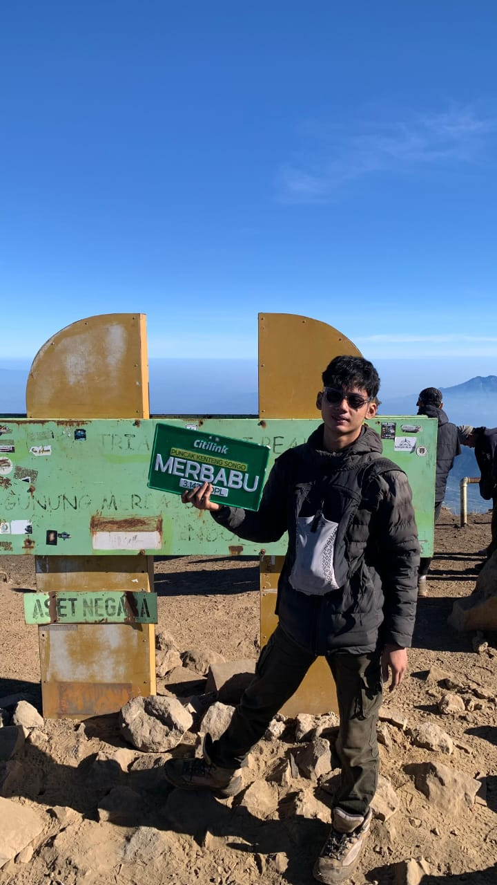

TENTANG
SAYA
PROFIL PROFESIONAL
- 23SA21A186
- SI23-B
- GEOGRAPHIC INFORMATION SYSTEM
- MAHASISWA
- UNIVERSITAS AMIKOM PURWOKERTO
Halo! Website ini dibuat untuk menampilkan informasi wilayah, data kelurahan, serta peta administrasi berbasis Web GIS (QGIS/qgis2web). Saya fokus pada desain grafis dan pengembangan sistem informasi geografis yang interaktif.
PENGALAMAN
Ruang Capcut – Kelas Editing Online Capcut
Desain, Photography, Videography (2023–Sekarang)
Ngedit otodidak – di software Handphone
Basic Editing (2023–Sekarang)
HTML
CSS
JavaScript
QGIS
TERIMA KASIH
LETS WORK HARD
+62 882-2952-7401
dhika@gmail.com
@dhikaptr_